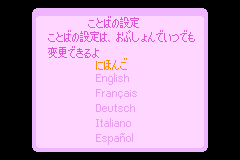

Puyo Puyo Fever (Japan) (En,Ja,Fr,De,Es,It)
EEPROM 4K Save Format Spec gbakit Built-In
Cartridge Identity
- Game Code
BPFJ(FamilyBPF)- Header Title
PUYO FEVER- Maker / Revision
8P/ rev0- ROM Size
- 8.0 MiB (8,388,608 B)
- Save Media
EEPROM 4K- SHA-256
a2cc87ed1142be8a534ea8b035969879c786f287d1a89cbc87f101e96b5a065d- Engine / SDK Group
comm-001(196 families)
Screenshots

Battery Save Format Specification
Open Full Save Format SpecDownload Sample .sav (512 B)Download save-format.json
- Specification Coverage
- 7 mapped fields · 1 verified checksum(s) · Confidence: MEDIUM
- gbakit Built-In Support
- Built-in (BPFJ)
- Emulator Verification
- Checksum enforced: No · Repaired save accepted: Yes
gbakit save verify BPFJ save.sav
gbakit save decode BPFJ save.sav
gbakit save fix BPFJ damaged.sav -o repaired.savObserved Battery Save Layout
- Fill Byte & Active Size
0xFFfill · 0–408 / 512 B active (entropy 5.02 bits/B)- Active Offset Ranges
0x0–0x197(1 total)- ASCII Magic / Headers
- None detected
- Observed Variable Regions
- 408 bytes across 1 spans:
0x0–0x197 - Candidate Checksum/Counter Spans
- None
Hardware MMIO Subsystems
ppu_display0x80018fc,0x80564d4
Regional Variants & Revisions (Family BPF)
- Puyo Pop Fever (Europe) (En,Fr,De,Es,It) (
BPFP, 8 MiB)